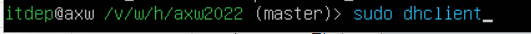
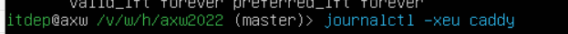

维护
此页面为网站维护文档，如有任何维护问题请先参照此处。
简介¶
爱心屋项目运行在 IT 部的服务器上，无论是网站、后台、服务器后端，目前都只能通过校园网访问。Web软件目前使用Nginx，网站的后端使用Django框架（Python开发），数据库使用在docker容器中运行的mysql，服务器虚拟机系统是Ubuntu。全栈维护需要计算机网络、Python、docker、数据库和Linux基础。
信息汇总列表
Url相关：
-
域名：
axw.ecust.edu.cn（172.18.58.54） -
后台管理（包括账号、订单等网站内容的管理）：
axw.ecust.edu.cn/admin -
信息导入：
axw.ecust.edu.cn/User_Admin/batch_add_user
系统相关：
-
Linux 后端连接方式：用ssh，或者用 EXSI 虚拟机管理平台（具体方法见后文），登录用户名和密码请询问管理人员。
-
EXSI 平台IP地址：
172.18.58.11。登录用户名和密码请询问管理人员。
仓库相关：
- 源码仓库上游在 Github（gitee只是方便校园网环境拉取，只是中转，因此不要把代码上传到gitee）：点此处访问，一般需代理
测试环境：虚拟机 AXW-TestEnv
-
ip地址：
172.18.58.177 -
数据库管理：
172.18.58.177:81/phpmyadmin/ -
启动方式：先切换至
Django_Axw虚拟环境，然后输入python /var/www/html/axw2022/manage.py runserver 0.0.0.0:8000 -
源码更新方式：可以直接在系统修改Django源码。验证成功后可以应用到主源码，注意测试平台源码和主源码是不同的，不要直接覆盖文件到源码。
-
测试环境上网：请参照部署文档，使用
curl命令
NEW 服务器管理面板
-
地址：
https://172.18.58.54:56210/panel -
经确认信息办安全检查仅检查域名下的内容，因此该面板不会被漏洞检查
-
登录用户名和密码请询问管理人员。
网站主要功能¶
管理爱心屋的货物商品登记和爱心币数量，同时可以用学号登录，预定一些商品。
服务¶
服务器上只有三个重要服务：网站、反代、数据库。出了问题只要检查一遍这几个就行了。所有服务都能自启动，非常方便，所以服务器重启后，不需要人工干预，爱心屋的网站理论上是能自动在本地运行的。如何修改服务/查看运行状态/查看日志可以看这里。
1.网站¶
网站是作为服务运行的（服务名称是 axw）。Django 会自动检测源代码变化。源码位置：/var/www/html/axw2022，一般可以通过 z axw 进入。
关于z
z 命令是软件 zoxide 提供的，它是 cd 的替代品，可以根据用户习惯模糊搜索进入的目录。
重要
源码更新方式：上传至github后，在EXSI打开服务器控制台或者用ssh连接，用git pull同步仓库源码，最后重启Django。不要直接在后端动源码。如果确需试验代码功能或者实践各类技术，可以去爱心屋测试平台。
命令ssh连接服务器系统： ssh itdep@172.18.58.54
命令git管理源码版本：
- 先进行网络连接：
~/scripts/srun.sh使用老学长的校园网账号密码认证，如果不能用了可以修改一下脚本。或者在~/scripts文件夹下srun login -s http://172.20.13.100 -u 学号 -p 密码 -d --acid 18如果连接超时，Ctrl+C退出然后再次尝试。
命令 git pull origin master 即可下载仓库源码，届时需要输入在gitee的账号和密码。
（已通过修改dns服务文件修复）如果提示无法解析域名，请输入 sudo nano /etc/resolv.conf 修改DNS配置文件，添加nameserver 114.114.114.114即可。
Django 重启，即重新拉起 axw 服务，请使用journalctl -xeu axw。
2.反代¶
Nginx，配置文件在/etc/nginx下，修改后先sudo nginx -t，再sudo nginx -s reload。
关于信息办要求整改的内容
封闭了80端口，杜绝了慢速HTTP攻击的可能
启用了CSP、X-Frame-Options、Strict-Transport-Security、X-Download-Options、X-Permitted-Cross-Domain-Policies的请求头防护
拒绝了OPTIONS和PUT的请求
拒绝了.map文件的访问请求
3.数据库¶
apt更新数据库老是出毛病，一怒之下放到了docker容器中。现在数据库地址为172.17.0.1（本质上还是127.0.0.1，不过是docker网络），端口还是3306，网站连接数据库用户名为axw，密码也在配置文件中写好。
在对数据库进行操作前，请先备份。数据库每天凌晨都会进行自动备份，脚本位于~/scripts/。同时，请注意保存media文件目录。
重要
服务器中 /var/www/html/axw2022/media 的文件目录，其中包括各种图片资源，如果缺失，网站页面无法正确加载。因此，在导出数据库文件的同时，请下载服务器中 /var/www/html/axw2022/media 的文件目录。
关于数据库的导入，有两种方法：
命令行导入法
这需要你理解docker的存储原理。简单而言，docker容器中的系统通过与主系统共享文件目录，实现数据持久化。不在共享文件目录内的文件，都会在重启后丢失。
本网站mysql-server挂载目录位置为/www/server/compose/mysql-server/mysql。
导入.sql文件时，先把文件上传到/www/server/compose/mysql-server/mysql/data；
然后运行docker exec mysql-server bash -it进入容器的命令行；
最后mysql -u root -p < example.sql即可导入。
数据库和docker容器都可以在面板https://172.18.58.54:56210/panel里面轻松管理。
pma导入法
phpmyadmin（也是docker运行）可以很好地管理数据库。访问http://172.18.58.54:3307/，输入地址172.17.0.1、用户名和密码，进入后选择导入并上传文件即可。
如果要重新配置数据库服务器还是挺麻烦的。首先拉取mysql:8镜像后需要使用microdnf install nano安装文本编辑器，然后在/etc/my.cnf中写入mysql_native_password=ON，然后再在数据库中修改用户权限：
update user set authentication_string='' where user='root';
flush privileges;
select user,host from user; ALTER USER 'root'@'%' IDENTIFIED WITH mysql_native_password BY '常用';
之后还要再创建一个单独的mysql用户（需要先导入数据库，才可以授予数据库权限）：
CREATE USER 'axw'@'%' IDENTIFIED BY '常用';
GRANT all privileges ON AXW.* TO 'axw'@'%';
FLUSH PRIVILEGES;
4.虚拟机系统¶
-
虽然我使用 poetry 进行 python 本地开发包管理，但是服务器上搞 poetry 挺麻烦的，所以上面用的还是 conda。虚拟环境名称是
Django_Axw。 -
系统安装了 fish shell，如果想使用可以输入
fish进入，exit退出。 -
↑进入历史记录，界面是由 atuin 提供的。选中命令以后按Enter执行，按Tab上屏不执行。
维护时遇到了一些问题，最终解决了，一定要记录于本文档里，便于查找与避坑。
主要维护问题¶
一. 应对服务器突然断电等情况，没及时将服务挂起造成的服务瘫痪，如何恢复¶
-
先登录EXSI管理平台。
-
打开
172.18.58.2也就是 router 的电源，否则无法正确配置虚拟机网络。 -
如需配置路由，router 管理账号：
ROS-ESX。密码请询问管理人员。 -
打开
172.18.58.54AXW服务器电源。 -
最后一步：设置。
以下操作目前已不需要，所有服务在开机后都会自动启动。
-
首先使用
sudo ip addr show查看网络状态，请检查 IPv4 地址是否被正确分配到（图示为正常情况）。
如果服务器刚刚重启，没有 DHCP 服务，使用
sudo dhclient开启动态地址服务。
之后再次检查 IPv4 地址。一般到此就可以打开网页了。
-
如果网站页面仍打不开，检查 axw、caddy 服务。
journalctl -xeu caddy journalctl -xeu axw顺序可以颠倒。
服务没有恢复的话请恢复快照版本，并且注意保护快照版本!
二.服务器定期更换证书（待修改为Nginx版）¶
注：2025年3月18日网址换为校内内网域名，新的证书存放于/var/www/html/cert/axw.ecust.edu.cn/cert.pem，同时如果没有需要请不要动cert.key文件
-
win+R并输入
cmd，使用sftp命令访问服务器存储：sftp itdep@axw.itdep.tech -
用
get和put命令保存旧证书文件，上传新证书文件。证书配置可以在/etc/caddy/Caddyfile中找到 -
重启Caddy服务
三.新增认定人员数据如何导入¶
每学年都会有大量同学成为爱心屋新用户，创建新用户虽然不难，但目前还是交给了IT部来做。以下是方法：
-
在校园网环境下打开网站：
https://axw.ecust.edu.cn/User_Admin/batch_add_user/（TODO：需要迁移到admin） -
下载模板，把爱心屋提供的人员信息填进去，注意学号、姓名、身份证号都是字符类型，表格底部数字为爱心币数量（eg. 1000）
-
上传，写下备注，最后submit
注：成功会返回success，若返回overlap.txt表明和已有人员重复，需要删除后再上传。
四.如何修改数据库数据¶
你可以选择在phpmyadmin中修改，这很简单。当然，这里也会给出如何使用命令行修改。
首先，请在EXSI平台保存服务器快照并备份数据库，然后再进行任何数据修改。
-
校园网环境下使用
ssh； -
运行
docker exec mysql-server bash -it进入容器的命令行；
然后输入mysql -u root -p，再输入密码。登录密码请询问管理人员。
- 使用
show命令查询数据库、数据表，使用use选择数据库，使用select输出符合条件的数据。
修改使用update命令。
- 修改密码比较特殊，由于密码经过加密，无法直接修改。在数据库修改的密码和在登录时所需填写的密码不一致。这是因为密钥头会更改，因此提前在
axw.itdep.tech/admin设置好一个用户的密码然后到数据库复制给其他人比较方便。
五.爱心屋网站出现bug或者信息办反馈漏洞怎么办¶
- 关于bug
bug并不是网站加载不出来、用户登不进去等表象，而是系统性的问题。这需要能够灵活使用浏览器（F12）的检查功能。
实在无法解决的bug可以求助GPT、学长和信息办老师（不大可能）。
- 关于漏洞或者各种调整要求
大部分漏洞可以通过修改Caddyfile（Web通信管理）和settings.py（后端配置）解决。
六.更换域名相关事宜（基本不会再发生）¶
-
修改
/etc/caddy/Caddyfile中的域名设置。2025年3月，域名名称为axw.ecust.edu.cn。 -
修改
/var/www/html/axw2022/Django_Axw/settings.py中的CSRF_TRUSTED_ORIGINS设置和ALLOWED_HOSTS设置。 -
在
qzzx.ecust.edu.cn/admin中修改友情链接爱心屋网站域名。
七.服务器如何备份¶
关于备份和快照的区别，请参照此处。
关于Linux系统如何备份和恢复，请参照此处。
连接上服务器后，输入以下指令即可在/目录下生成backup.tgz备份文件：
cd /
tar cvpzf backup.tgz --exclude=./proc --exclude=./lost+found --exclude=backup.tgz --exclude=./mnt --exclude=./sys --exclude=./media ./
备份时间很长，请耐心等待。备份后请重命名backup.tgz并妥善保存好该文件。
目前保存在IT的电脑里，位置：F:/服务器tar备份
为了预防服务器数据丢失，我写了一个自动备份数据库并上传到gitee仓库和IT电脑的脚本，即 ~/scripts/AXWbak.sh。
所有数据库备份文件都经过加密，解密方式为 openssl enc -d -aes-256-cbc -in backup.enc -out backup.sql -pass pass:"*" *处是密码。密码请询问管理人员。
对于虚拟机硬盘的操作，比如扩容等，请先tar备份。
- 25年5月因为扩容格式错误导致系统损坏，非常难搞。最后是靠tar备份提取数据库文件才修复的。
关于此目录下的附件¶
附件分别是Caddy配置（已不使用），数据库备份和联网脚本。
-
Caddy配置重命名为
Caddyfile,放到/etc/caddy目录下即可。 -
脚本请放到
/home/itdep目录下。比如联网脚本路径应为/home/itdep/scripts/srun.sh。